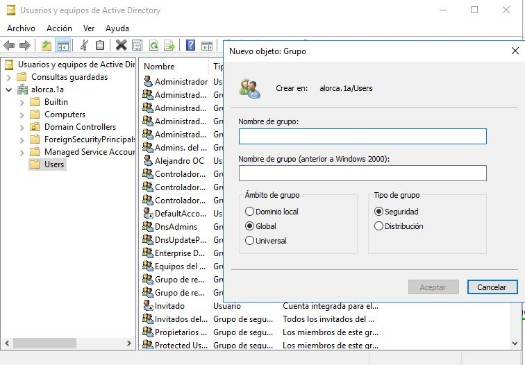
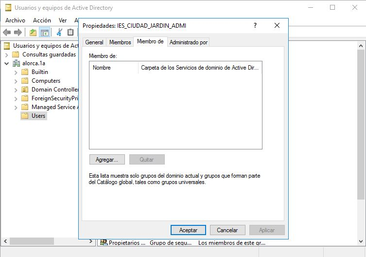
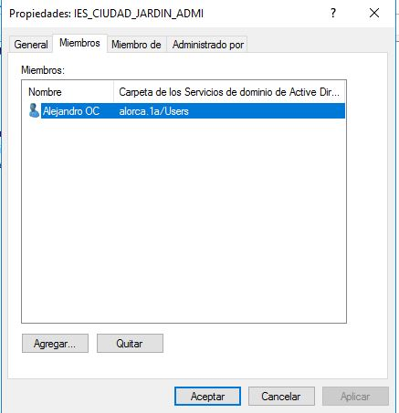

a.4) Creación y administración de grupos de seguridad
Creación de un grupo
Como en ocasiones anteriores, cuando se abra la ventana Usuarios y equipos de Active Directory, buscaremos en el panel de la izquierda el contenedor en el que queramos guardar el nuevo grupo. En este caso, volveremos a usar el contenedor Users, que ya utilizamos para las cuentas de usuario. Después haremos clic con el botón derecho del ratón sobre el contenedor.
En ella, rellenaremos el nombre que queremos darle a la cuenta de grupo que estamos creando (Nombre de grupo). Marcamos las opciones de la captura

Modificar valores en las cuentas de los grupos
Como en ocasiones anteriores, podemos volver a la herramienta Usuarios y equipos de Active Directory siempre que necesitemos ajustar las propiedades de las cuentas de grupos. Cuando se abra la ventana, haremos clic con el botón derecho del ratón sobre el grupo que queremos modificar. En las propiedadces tenemos diferentes solapas General, Miembros, Miembro de y Aministrado por, la solapa Miembros, elegiremos los usuarios, equipos o grupos que son miembros del grupo que estamos editando, la solapa Miembro de, para hacer que este grupo sea, a su vez, miembro de un grupo distinto, la solapa Administrado por, nos permite delegar la administración de este grupo en otro usuario diferente.
Le damos a Agregar, una vez ya dado, le pulsamos en Opciones avanzadas, una vez allí escribimos el nombre del usuario y le damos a Buscar ahora y luego a Aceptar y luego nuevamente en Aceptar y otra vez de nuevo en Aceptar. Con todo esto hemos añadido un usuario a un grupo.
Para eliminar un usuario del grupo, abrimos las propiedades del grupo y en la parte de Miembros le damos a Quitar y luego aceptamos los cambios. Para añadir miembros que son de otro grupo, nos vamos a Miembro de y hacemos el mismo procedimiento que para agregar un usuario, pero este caso ponemos el nombre del grupo al cual pertenece las personas que queremos añadir y para elminar esos miembros que son de otro grupo pero lo hemos añadido al nuevo, su procedimiento es igual que el de eliminación de un usuario de un grupo.
